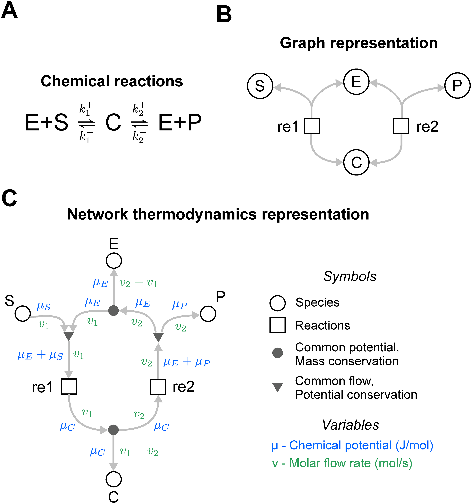

이전 이론을 기준으로 그림을 먼저 읽고, 논문과 문서를 대조해 설명을 고칩니다. 수정한 기준은 다음 사례에 다시 적용합니다.
진행 상황: 29개 사례 기록 / 목표 40회 · 미완료현재 01–29회만 대조했습니다. 일부는 자료를 찾는 과정에서 캡션이나 주변 본문이 노출됐습니다. 같은 작업자가 분석과 대조를 수행했으므로 독립 맹검 실험은 아닙니다. 이전의 40개 비교 쌍은 40번의 연속 재검증이 아니었습니다. 현재 회차는 검토 기록의 수이며, 모든 회차가 서로 다른 두 논문을 비교한 것은 아닙니다.
READ THE ORIGINAL / 01
기호를 눌러 원문에서 확인하기
같은 효소 반응을 세 가지 문법으로 그린 실제 논문 그림입니다. 번호를 누르면 그림의 표현과 본문에서 확인한 의미, 판단하지 못한 부분이 표시됩니다.

Pan, Gawthrop, Cursons & Crampin (2021), Fig 2. 원본 이미지는 변경하지 않았으며 번호 표시는 사이트에서 별도로 겹쳐 놓았습니다. 원본과 캡션 ↗ · CC BY 4.0
대조 전: 삼각형과 빈 원은 두 뉴런 집단이고 바깥의 경계는 고정된 제약이라는 범례를 읽었습니다. 아래 비교 그림과 파란 테두리가 어떤 결과인지는 확인하기로 했습니다. 검색 과정에서 캡션 일부가 노출됐습니다.
원문: 전체 뉴런 수 N = NE + NI = 1200을 고정하고 두 집단의 비율을 바꾸어 이미지 복원 성능을 비교합니다. 부피는 실제 부피 측정이 아니라 뉴런 수로 대리했습니다. 그림의 6:1은 표시된 비교 조건 중 복원 충실도가 가장 좋은 예시입니다. 별도 연속 분석의 특정 조건에서는 최솟값이 약 6.5:1입니다.
보완: 시간 범위뿐 아니라 어떤 비교 조건에서 어떤 합이 일정하고 어떤 구성요소가 변하는지 확인합니다. 빈 원은 이 그림에서 억제성 뉴런이며, 화학 도식의 빈 원에 같은 의미를 부여할 수 없습니다.
실제 뉴런의 부피를 직접 표현한 결과나 모든 생물에 적용되는 최적 비율은 아닙니다. 아래 사진의 제3자 권리를 별도 확인할 수 없어 원본에 연결합니다.
대조 전: 12회와 유사하게 삼각형과 원, 화살표와 T자 연결을 쓴 그림입니다. 검색 중 비교 조건과 설명 일부가 노출됐습니다. E/I가 무엇을 나눈 비율인지 확인하기로 했습니다.
원문: Larisch 등의 연구는 주 모델에서 흥분성 뉴런 144개와 억제성 36개의 수를 유지합니다. 그런데 패널 B의 EI2/1·EI3/1은 뉴런 수가 아니라 자극 동안 평균한 흥분성 대 억제성 입력 전류의 비율입니다. 저자는 목표 발화율 ρ를 바꿔 이 비율을 조정합니다.
비교와 보완: 12회는 고정된 전체에서 두 집단의 수를 바꾸지만, 13회의 주 비교는 집단 크기를 유지하며 전류 비율을 바꿉니다. 같은 E/I라도 분자·분모, 단위, 평균 범위와 비교 조건을 기록합니다. 이 논문의 별도 실험에서는 집단 크기도 바뀝니다.
도형의 채움이나 색을 선택한 저자의 의도는 확인하지 못했습니다. 원본 이미지에 포함된 사진의 제3자 권리를 별도 확인할 수 없어 원본에 연결합니다.
Wagatsuma, Nobukawa & Kurikawa (2025), Fig 1, 원본 그대로 · CC BY 4.0
대조 전: 범례의 화살표와 동그란 선 끝은 흥분·억제 연결을 구별합니다. 서로 다른 도형은 뉴런 집단을 세분화한 것으로 보였지만, 모양의 선택 이유는 판단을 보류했습니다.
원문: E/I는 흥분성 Pyr 수를 세 억제성 집단 수의 합으로 나눈 값입니다. 전체 뉴런 수는 고정하고 Pyr와 PV 또는 Pyr와 SOM을 바꿨습니다. 같은 비율로 바뀌더라도 어느 하위 집단이 달라졌는지에 따라 모형의 진동 응답은 달랐습니다.
비교와 보완: 12회는 이미지 재구성에 초점을 맞춰 두 집단을 비교하지만, 이 연구는 억제성 하위 집단의 역할에 주목해 셋으로 나눕니다. 연구 질문에 따른 모형 범위의 차이로 해석할 수 있습니다. 분자와 분모뿐 아니라 그 안의 구성과 어떤 구성요소를 바꿨는지 확인합니다.
저자가 도형이나 선 끝의 정확한 모양을 택한 이유는 확인하지 못했습니다. 결과는 계산 모형의 결과이며 임상적 원인을 입증한 것은 아닙니다. 검색 과정에서 일부 내용이 노출됐습니다.
대조 전: 19회의 FCN과 같은 이미지 분할 목적이지만 U자형 구조입니다. 검색과 그림을 찾는 과정에서 복사·자르기와 범례가 이미 노출됐습니다. 흰 상자에서 실제로 어떤 결합이 일어나는지 확인하기로 했습니다.
원문: 파란 상자는 다중 채널 특징 맵이고 숫자는 채널 수와 공간 크기입니다. 회색 화살표는 특징 맵의 복사·자르기입니다. 저자는 패딩 없는 합성곱으로 가장자리 픽셀이 줄어들어 크기를 맞추려면 잘라야 한다고 설명합니다.
같은 목적, 다른 연산: FCN은 업샘플한 깊은 층의 클래스 예측값을 얕은 층의 예측값과 합산합니다. 원래 U-Net은 자른 얕은 층의 특징 맵을 확장 경로의 특징 맵과 이어 붙입니다. 둘 다 세밀한 위치 정보를 활용하지만 화살표의 목적지만 보고 결합 연산까지 알아낼 수는 없습니다.
배치의 근거: U-Net 저자는 확장 경로에도 많은 특징 채널을 두어 맥락 정보를 높은 해상도로 전달하기 때문에 모델이 대체로 대칭인 U자 구조가 된다고 설명합니다. 이는 구조의 이유이며 도형 색을 고른 의도를 확인한 것은 아닙니다.
U-Net은 FCN을 인용해 확장한 논문입니다. 적용 영상과 연구 설계가 달라 성능이나 그림의 우열을 직접 결론내리지 않습니다. 원본의 재사용 조건을 별도 확인하지 못해 링크로 제공합니다.
대조 전: 같은 의료 영상 분할 계열인데 20회의 U-Net과 달리 여러 중간 노드가 U자 안쪽에 들어갑니다. 검색 결과와 PDF 캡션에서 색의 역할과 개요가 노출됐습니다.
원문: 검정은 기존 U-Net, 초록·파랑은 새로 설계한 조밀한 skip 경로, 빨강은 여러 깊이의 감독을 나타냅니다. 중간 노드는 같은 수준의 이전 특징 맵들과 아래 수준에서 업샘플한 특징 맵을 이어 붙여 처리합니다.
비교와 보완: 원래 U-Net 그림은 특징 맵의 공간 크기와 채널·연산을 보여주고, UNet++ 그림은 원래 구조와 추가된 경로를 겹쳐 비교하며 별도 패널에 가지치기 대안을 제시합니다. 학습 시 여러 출력을 감독하지만 추론 시 정확 모드에서는 평균하고 빠른 모드에서는 하나를 택합니다.
저자들은 새 경로가 특징 맵 사이 의미 차이를 줄여 최적화를 쉽게 할 것이라는 가설을 제시합니다. 성능 차이만으로 그 원인이나 그림의 이해도 개선이 입증된 것은 아닙니다. 원본 재사용 조건을 별도 확인하지 못해 링크로 제공합니다.
대조 전: 검색 결과에서 동일한 생물학적 사건을 서로 다른 두 문법으로 그린다는 설명이 노출됐습니다. B의 같은 이름 상자와 붙어 있는 작은 빈 원이 각각 무엇인지 확인하기로 했습니다.
원문과 표준: 활동 흐름은 단백질 활동 사이의 촉진 관계를 간결하게, 과정 설명은 상태 변화와 촉매 반응을 자세하게 드러냅니다. 작은 원은 별도 단백질을 추가한 것이 아니라 단백질에 붙은 상태 자리이며, P는 인산화된 상태를 표시합니다. 빈 상태가 인산화 전 상태를 나타내는 예시는 SBGN 학습 자료에서 확인할 수 있습니다.
원문 사이의 불일치: 그림에 보이는 A는 활동 흐름, B는 과정 설명의 구성에 부합하지만 저널 캡션은 A와 B를 반대로 적었습니다. 본문·그림·표준을 비교하면 표기가 뒤바뀐 것으로 보이나, 공식 정오표를 확인한 것은 아닙니다.
보완: 원문도 서로 충돌할 수 있습니다. 패널 레이블, 기호의 부착 위치, 본문과 분야 표준을 교차 확인하고 미확인 부분을 남깁니다. 빈 원의 정확한 위치나 저자가 동그라미 모양을 고른 이유까지는 확인하지 못했습니다.
대조 전: a는 상세 반응도, b는 요약도이고, 아래 패널은 모델과 실험의 여러 비교로 보였습니다. 검색 과정에서 이 개요가 노출됐습니다. 패널마다 색과 시간 단위가 다른 점을 따로 살폈습니다.
원문: a는 상세한 반응 모형이고 b는 핵심 신호 및 양성 피드백을 추상화한 그림입니다. 예를 들어 여러 단계의 ERK 활성화는 모형에서 하나의 반응으로 합쳐졌습니다. 아래의 시간 경과와 교란 자료는 모델의 매개변수를 보정하는 데 쓰였습니다. 별도의 학습에 쓰지 않은 검증은 보충 그림에서 보고합니다.
범례 불일치: c–g 그림 내부의 범례는 파랑이 Simulation, 빨강이 Experiment이지만 캡션은 그 반대로 설명합니다. 어느 쪽이 맞는지 확정하지 않고 충돌을 남깁니다. k–r의 색은 대신 대조군과 PYK2 억제를 구분하며, 패널에 따라 시간 단위도 분과 시간으로 다릅니다.
보완: 같은 색이라도 패널마다 적용 범위를 확인하고, 보정에 사용한 자료와 별도의 검증 자료를 구분합니다. 복잡한 그림에서 표식·조건·자료의 지위를 각각 기록합니다.
v29는 다음 새로운 그림에서 재시험하지 않았습니다. 29개 사례는 화학·생물학, 의료 연구 논문과 제안서, 연구·교육 프로그램, 사회과학 및 컴퓨터비전에 걸쳐 있지만 일부 분야에 집중돼 있으며, 독자에게 그림을 해석하거나 직접 그리게 하는 이해도 실험도 진행하지 않았습니다.